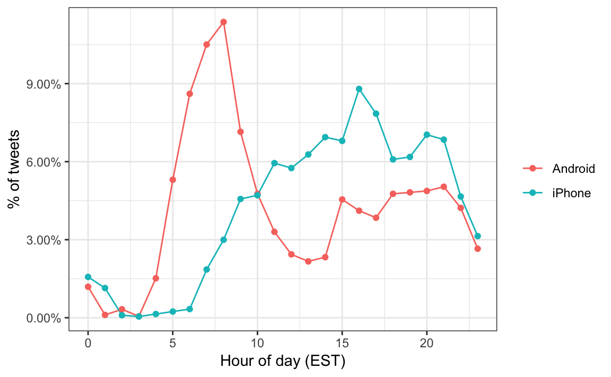
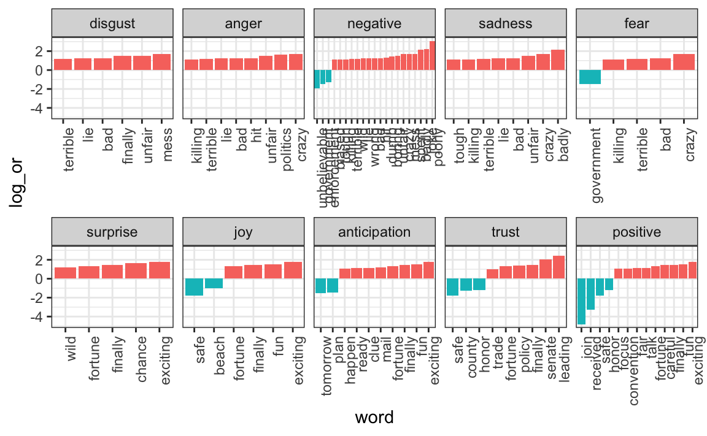

Chapter 26 Text mining
With the exception of labels used to represent categorical data, we have focused on numerical data. But in many applications, data starts as text. Well-known examples are spam filtering, cyber-crime prevention, counter-terrorism and sentiment analysis. In all these cases, the raw data is composed of free form text. Our task is to extract insights from these data. In this section, we learn how to generate useful numerical summaries from text data to which we can apply some of the powerful data visualization and analysis techniques we have learned.
26.1 Case study: Trump tweets
During the 2016 US presidential election, then candidate Donald J. Trump used his twitter account as a way to communicate with potential voters. On August 6, 2016, Todd Vaziri tweeted95 about Trump that “Every non-hyperbolic tweet is from iPhone (his staff). Every hyperbolic tweet is from Android (from him).” Data scientist David Robinson conducted an analysis96 to determine if data supported this assertion. Here, we go through David’s analysis to learn some of the basics of text mining. To learn more about text mining in R, we recommend the Text Mining with R book97 by Julia Silge and David Robinson.
We will use the following libraries:
In general, we can extract data directly from Twitter using the rtweet package. However, in this case, a group has already compiled data for us and made it available at http://www.trumptwitterarchive.com. We can get the data from their JSON API using a script like this:
url <- 'http://www.trumptwitterarchive.com/data/realdonaldtrump/%s.json'
trump_tweets <- map(2009:2017, ~sprintf(url, .x)) %>%
map_df(jsonlite::fromJSON, simplifyDataFrame = TRUE) %>%
filter(!is_retweet & !str_detect(text, '^"')) %>%
mutate(created_at = parse_date_time(created_at,
orders = "a b! d! H!:M!:S! z!* Y!",
tz="EST")) For convenience, we include the result of the code above in the dslabs package:
You can see the data frame with information about the tweets by typing
with the following variables included:
names(trump_tweets)
#> [1] "source" "id_str"
#> [3] "text" "created_at"
#> [5] "retweet_count" "in_reply_to_user_id_str"
#> [7] "favorite_count" "is_retweet"The help file ?trump_tweets provides details on what each variable represents. The tweets are represented by the text variable:
trump_tweets$text[16413] %>% str_wrap(width = options()$width) %>% cat
#> Great to be back in Iowa! #TBT with @JerryJrFalwell joining me in
#> Davenport- this past winter. #MAGA https://t.co/A5IF0QHnicand the source variable tells us which device was used to compose and upload each tweet:
trump_tweets %>% count(source) %>% arrange(desc(n)) %>% head(5)
#> source n
#> 1 Twitter Web Client 10718
#> 2 Twitter for Android 4652
#> 3 Twitter for iPhone 3962
#> 4 TweetDeck 468
#> 5 TwitLonger Beta 288We are interested in what happened during the campaign, so for this analysis we will focus on what was tweeted between the day Trump announced his campaign and election day. We define the following table containing just the tweets from that time period. Note that we use extract to remove the Twitter for part of the source and filter out retweets.
campaign_tweets <- trump_tweets %>%
extract(source, "source", "Twitter for (.*)") %>%
filter(source %in% c("Android", "iPhone") &
created_at >= ymd("2015-06-17") &
created_at < ymd("2016-11-08")) %>%
filter(!is_retweet) %>%
arrange(created_at)We can now use data visualization to explore the possibility that two different groups were tweeting from these devices. For each tweet, we will extract the hour, East Coast time (EST), it was tweeted and then compute the proportion of tweets tweeted at each hour for each device:
ds_theme_set()
campaign_tweets %>%
mutate(hour = hour(with_tz(created_at, "EST"))) %>%
count(source, hour) %>%
group_by(source) %>%
mutate(percent = n / sum(n)) %>%
ungroup %>%
ggplot(aes(hour, percent, color = source)) +
geom_line() +
geom_point() +
scale_y_continuous(labels = percent_format()) +
labs(x = "Hour of day (EST)", y = "% of tweets", color = "")
We notice a big peak for the Android in the early hours of the morning, between 6 and 8 AM. There seems to be a clear difference in these patterns. We will therefore assume that two different entities are using these two devices.
We will now study how the tweets differ when we compare Android to iPhone. To do this, we introduce the tidytext package.
26.2 Text as data
The tidytext package helps us convert free form text into a tidy table. Having the data in this format greatly facilitates data visualization and the use of statistical techniques.
The main function needed to achieve this is unnest_tokens. A token refers to a unit that we are considering to be a data point. The most common token will be words, but they can also be single characters, ngrams, sentences, lines, or a pattern defined by a regex. The functions will take a vector of strings and extract the tokens so that each one gets a row in the new table. Here is a simple example:
poem <- c("Roses are red,", "Violets are blue,",
"Sugar is sweet,", "And so are you.")
example <- tibble(line = c(1, 2, 3, 4),
text = poem)
example
#> # A tibble: 4 x 2
#> line text
#> <dbl> <chr>
#> 1 1 Roses are red,
#> 2 2 Violets are blue,
#> 3 3 Sugar is sweet,
#> 4 4 And so are you.
example %>% unnest_tokens(word, text)
#> # A tibble: 13 x 2
#> line word
#> <dbl> <chr>
#> 1 1 roses
#> 2 1 are
#> 3 1 red
#> 4 2 violets
#> 5 2 are
#> # … with 8 more rowsNow let’s look at an example from the tweets. We will look at tweet number 3008 because it will later permit us to illustrate a couple of points:
i <- 3008
campaign_tweets$text[i] %>% str_wrap(width = 65) %>% cat()
#> Great to be back in Iowa! #TBT with @JerryJrFalwell joining me in
#> Davenport- this past winter. #MAGA https://t.co/A5IF0QHnic
campaign_tweets[i,] %>%
unnest_tokens(word, text) %>%
pull(word)
#> [1] "great" "to" "be" "back"
#> [5] "in" "iowa" "tbt" "with"
#> [9] "jerryjrfalwell" "joining" "me" "in"
#> [13] "davenport" "this" "past" "winter"
#> [17] "maga" "https" "t.co" "a5if0qhnic"Note that the function tries to convert tokens into words. To do this, however, it strips characters that are important in the context of twitter. Namely, the function removes all the # and @. A token in the context of Twitter is not the same as in the context of spoken or written English. For this reason, instead of using the default, words, we use the tweets token includes patterns that start with @ and #:
campaign_tweets[i,] %>%
unnest_tokens(word, text, token = "tweets") %>%
pull(word)
#> [1] "great" "to"
#> [3] "be" "back"
#> [5] "in" "iowa"
#> [7] "#tbt" "with"
#> [9] "@jerryjrfalwell" "joining"
#> [11] "me" "in"
#> [13] "davenport" "this"
#> [15] "past" "winter"
#> [17] "#maga" "https://t.co/a5if0qhnic"Another minor adjustment we want to make is to remove the links to pictures:
links <- "https://t.co/[A-Za-z\\d]+|&"
campaign_tweets[i,] %>%
mutate(text = str_replace_all(text, links, "")) %>%
unnest_tokens(word, text, token = "tweets") %>%
pull(word)
#> [1] "great" "to" "be"
#> [4] "back" "in" "iowa"
#> [7] "#tbt" "with" "@jerryjrfalwell"
#> [10] "joining" "me" "in"
#> [13] "davenport" "this" "past"
#> [16] "winter" "#maga"Now we are now ready to extract the words for all our tweets.
tweet_words <- campaign_tweets %>%
mutate(text = str_replace_all(text, links, "")) %>%
unnest_tokens(word, text, token = "tweets") And we can now answer questions such as “what are the most commonly used words?”:
tweet_words %>%
count(word) %>%
arrange(desc(n))
#> word n
#> 1 the 2329
#> 2 to 1410
#> 3 and 1239
#> 4 in 1185
#> 5 i 1143
#> 6 a 1112
#> 7 you 999
#> 8 of 982
#> 9 is 942
#> 10 on 874
#> 11 will 843
#> 12 for 736
#> 13 thank 712
#> 14 be 670
#> 15 great 641
#> 16 at 507
#> 17 that 484
#> 18 me 452
#> 19 #trump2016 414
#> 20 hillary 405
#> 21 with 385
#> 22 it 367
#> 23 we 359
#> 24 are 353
#> 25 just 349
#> 26 have 348
#> 27 my 336
#> 28 so 311
#> 29 was 311
#> 30 he 307
#> 31 not 305
#> 32 people 303
#> 33 all 295
#> 34 #makeamericagreatagain 294
#> 35 by 288
#> 36 new 285
#> 37 am 263
#> 38 has 255
#> 39 america 254
#> 40 out 246
#> 41 very 238
#> 42 clinton 237
#> 43 our 231
#> 44 this 228
#> 45 make 218
#> 46 poll 217
#> 47 from 216
#> 48 again 213
#> 49 now 206
#> 50 crooked 205
#> 51 they 203
#> 52 big 200
#> 53 get 197
#> 54 trump 195
#> 55 who 188
#> 56 his 179
#> 57 she 177
#> 58 no 176
#> 59 about 173
#> 60 as 167
#> 61 her 163
#> 62 your 162
#> 63 but 160
#> 64 cruz 159
#> 65 join 158
#> 66 tonight 154
#> 67 us 154
#> 68 many 143
#> 69 do 140
#> 70 going 137
#> 71 said 136
#> 72 more 135
#> 73 time 132
#> 74 bad 130
#> 75 would 130
#> 76 iowa 126
#> 77 last 126
#> 78 today 125
#> 79 tomorrow 123
#> 80 like 121
#> 81 when 120
#> 82 enjoy 119
#> 83 president 117
#> 84 much 116
#> 85 one 116
#> 86 what 115
#> 87 back 114
#> 88 should 114
#> 89 vote 113
#> 90 if 112
#> 91 ted 112
#> 92 debate 111
#> 93 an 109
#> 94 amazing 108
#> 95 can 108
#> 96 never 108
#> 97 night 108
#> 98 @cnn 107
#> 99 @foxnews 106
#> 100 been 106
#> 101 up 106
#> 102 country 104
#> 103 crowd 103
#> 104 or 102
#> 105 win 102
#> 106 interviewed 101
#> 107 media 101
#> 108 had 100
#> 109 why 99
#> 110 watch 98
#> 111 carolina 97
#> 112 wow 97
#> 113 campaign 95
#> 114 their 95
#> 115 dont 93
#> 116 support 92
#> 117 how 91
#> 118 only 91
#> 119 really 91
#> 120 than 91
#> 121 see 90
#> 122 good 86
#> 123 them 86
#> 124 want 85
#> 125 hampshire 84
#> 126 ohio 84
#> 127 polls 84
#> 128 job 83
#> 129 totally 83
#> 130 morning 82
#> 131 soon 82
#> 132 him 81
#> 133 nice 81
#> 134 florida 80
#> 135 obama 80
#> 136 over 79
#> 137 rubio 79
#> 138 against 78
#> 139 jobs 77
#> 140 speech 77
#> 141 #maga 76
#> 142 did 76
#> 143 there 76
#> 144 way 76
#> 145 day 75
#> 146 even 75
#> 147 republican 75
#> 148 were 74
#> 149 show 73
#> 150 bernie 72
#> 151 #americafirst 71
#> 152 got 71
#> 153 go 69
#> 154 dishonest 68
#> 155 total 68
#> 156 money 67
#> 157 love 66
#> 158 rally 66
#> 159 jeb 65
#> 160 must 65
#> 161 because 64
#> 162 made 64
#> 163 south 64
#> 164 #draintheswamp 63
#> 165 down 63
#> 166 failing 63
#> 167 won 63
#> 168 doing 60
#> 169 years 60
#> 170 being 59
#> 171 cant 59
#> 172 state 59
#> 173 better 58
#> 174 isis 58
#> 175 marco 58
#> 176 look 57
#> 177 #votetrump 56
#> 178 after 56
#> 179 bush 56
#> 180 wonderful 56
#> 181 american 55
#> 182 numbers 55
#> 183 sad 55
#> 184 lost 54
#> 185 news 54
#> 186 together 54
#> 187 everyone 53
#> 188 national 53
#> 189 other 53
#> 190 run 52
#> 191 #imwithyou 51
#> 192 doesnt 51
#> 193 its 51
#> 194 say 51
#> 195 tickets 51
#> 196 beat 50
#> 197 first 50
#> 198 two 50
#> 199 video 50
#> 200 failed 49
#> 201 record 49
#> 202 another 48
#> 203 believe 48
#> 204 done 48
#> 205 immigration 48
#> 206 movement 48
#> 207 pennsylvania 48
#> 208 ratings 48
#> 209 wants 48
#> 210 words 48
#> 211 @nytimes 47
#> 212 saying 47
#> 213 special 47
#> 214 supporters 47
#> 215 take 47
#> 216 which 47
#> 217 illegal 46
#> 218 kasich 46
#> 219 know 46
#> 220 live 46
#> 221 off 46
#> 222 presidential 46
#> 223 remember 46
#> 224 well 46
#> 225 does 45
#> 226 into 45
#> 227 john 45
#> 228 sanders 45
#> 229 senator 45
#> 230 virginia 45
#> 231 ads 44
#> 232 cnn 44
#> 233 ever 44
#> 234 looking 44
#> 235 weak 44
#> 236 didnt 43
#> 237 getting 43
#> 238 honor 43
#> 239 nothing 43
#> 240 wall 43
#> 241 @foxandfriends 42
#> 242 fantastic 42
#> 243 massive 42
#> 244 where 42
#> 245 york 42
#> 246 guy 41
#> 247 north 41
#> 248 story 41
#> 249 think 41
#> 250 hard 40
#> 251 million 40
#> 252 nevada 40
#> 253 pm 40
#> 254 smart 40
#> 255 deal 39
#> 256 donald 39
#> 257 evening 39
#> 258 stop 39
#> 259 terrible 39
#> 260 candidate 38
#> 261 endorsement 38
#> 262 far 38
#> 263 making 38
#> 264 most 38
#> 265 need 38
#> 266 party 38
#> 267 safe 38
#> 268 talk 38
#> 269 too 38
#> 270 badly 37
#> 271 bill 37
#> 272 let 37
#> 273 little 37
#> 274 right 37
#> 275 watching 37
#> 276 @seanhannity 36
#> 277 arizona 36
#> 278 colorado 36
#> 279 election 36
#> 280 lightweight 36
#> 281 place 36
#> 282 such 36
#> 283 tough 36
#> 284 women 36
#> 285 world 36
#> 286 @oreillyfactor 35
#> 287 could 35
#> 288 fox 35
#> 289 strong 35
#> 290 then 35
#> 291 w 35
#> 292 while 35
#> 293 change 34
#> 294 forward 34
#> 295 governor 34
#> 296 law 34
#> 297 mexico 34
#> 298 millions 34
#> 299 voters 34
#> 300 work 34
#> 301 yesterday 34
#> 302 also 33
#> 303 carson 33
#> 304 emails 33
#> 305 every 33
#> 306 indiana 33
#> 307 lead 33
#> 308 leaving 33
#> 309 says 33
#> 310 talking 33
#> 311 things 33
#> 312 use 33
#> 313 700 32
#> 314 border 32
#> 315 disaster 32
#> 316 false 32
#> 317 heading 32
#> 318 interview 32
#> 319 keep 32
#> 320 negative 32
#> 321 next 32
#> 322 person 32
#> 323 put 32
#> 324 states 32
#> 325 wisconsin 32
#> 326 ad 31
#> 327 best 31
#> 328 happy 31
#> 329 here 31
#> 330 im 31
#> 331 lets 31
#> 332 lyin 31
#> 333 major 31
#> 334 rigged 31
#> 335 some 31
#> 336 spent 31
#> 337 #crookedhillary 30
#> 338 #fitn 30
#> 339 #gopdebate 30
#> 340 biased 30
#> 341 family 30
#> 342 proud 30
#> 343 romney 30
#> 344 trade 30
#> 345 worst 30
#> 346 before 29
#> 347 bring 29
#> 348 came 29
#> 349 clintons 29
#> 350 come 29
#> 351 hope 29
#> 352 michigan 29
#> 353 others 29
#> 354 phony 29
#> 355 radical 29
#> 356 thanks 29
#> 357 wont 29
#> 358 wrong 29
#> 359 zero 29
#> 360 @morningjoe 28
#> 361 #trumppence16 28
#> 362 crowds 28
#> 363 dc 28
#> 364 event 28
#> 365 lies 28
#> 366 long 28
#> 367 same 28
#> 368 texas 28
#> 369 told 28
#> 370 washington 28
#> 371 @megynkelly 27
#> 372 both 27
#> 373 convention 27
#> 374 dumb 27
#> 375 highly 27
#> 376 hit 27
#> 377 low 27
#> 378 meeting 27
#> 379 obamacare 27
#> 380 political 27
#> 381 press 27
#> 382 statement 27
#> 383 truly 27
#> 384 year 27
#> 385 fight 26
#> 386 post 26
#> 387 yet 26
#> 388 1 25
#> 389 almost 25
#> 390 california 25
#> 391 call 25
#> 392 center 25
#> 393 fix 25
#> 394 gave 25
#> 395 judgement 25
#> 396 order 25
#> 397 report 25
#> 398 reporting 25
#> 399 shows 25
#> 400 system 25
#> 401 times 25
#> 402 tv 25
#> 403 chris 24
#> 404 iran 24
#> 405 mitt 24
#> 406 police 24
#> 407 race 24
#> 408 released 24
#> 409 spending 24
#> 410 television 24
#> 411 true 24
#> 412 unbelievable 24
#> 413 under 24
#> 414 united 24
#> 415 7pm 23
#> 416 allowed 23
#> 417 always 23
#> 418 away 23
#> 419 crazy 23
#> 420 email 23
#> 421 incredible 23
#> 422 interest 23
#> 423 leadership 23
#> 424 nation 23
#> 425 politics 23
#> 426 these 23
#> 427 veterans 23
#> 428 via 23
#> 429 watched 23
#> 430 winning 23
#> 431 @abc 22
#> 432 #bigleaguetruth 22
#> 433 attack 22
#> 434 candidates 22
#> 435 coming 22
#> 436 enforcement 22
#> 437 history 22
#> 438 nobody 22
#> 439 old 22
#> 440 real 22
#> 441 running 22
#> 442 saturday 22
#> 443 thing 22
#> 444 those 22
#> 445 tremendous 22
#> 446 trying 22
#> 447 used 22
#> 448 week 22
#> 449 working 22
#> 450 worse 22
#> 451 #iacaucus 21
#> 452 12 21
#> 453 ago 21
#> 454 announced 21
#> 455 borders 21
#> 456 called 21
#> 457 end 21
#> 458 fact 21
#> 459 fast 21
#> 460 fun 21
#> 461 hillarys 21
#> 462 horrible 21
#> 463 interesting 21
#> 464 islamic 21
#> 465 left 21
#> 466 lot 21
#> 467 man 21
#> 468 officers 21
#> 469 thousands 21
#> 470 votes 21
#> 471 word 21
#> 472 #icymi 20
#> 473 1000 20
#> 474 book 20
#> 475 crime 20
#> 476 face 20
#> 477 killed 20
#> 478 knows 20
#> 479 leaders 20
#> 480 leading 20
#> 481 melania 20
#> 482 office 20
#> 483 pay 20
#> 484 politicians 20
#> 485 read 20
#> 486 top 20
#> 487 tuesday 20
#> 488 without 20
#> 489 3pm 19
#> 490 afternoon 19
#> 491 asked 19
#> 492 boring 19
#> 493 dems 19
#> 494 elizabeth 19
#> 495 energy 19
#> 496 fair 19
#> 497 hear 19
#> 498 looks 19
#> 499 nasty 19
#> 500 paul 19
#> [ reached 'max' / getOption("max.print") -- omitted 6120 rows ]It is not surprising that these are the top words. The top words are not informative. The tidytext package has a database of these commonly used words, referred to as stop words, in text mining:
stop_words
#> # A tibble: 1,149 x 2
#> word lexicon
#> <chr> <chr>
#> 1 a SMART
#> 2 a's SMART
#> 3 able SMART
#> 4 about SMART
#> 5 above SMART
#> # … with 1,144 more rowsIf we filter out rows representing stop words with filter(!word %in% stop_words$word):
tweet_words <- campaign_tweets %>%
mutate(text = str_replace_all(text, links, "")) %>%
unnest_tokens(word, text, token = "tweets") %>%
filter(!word %in% stop_words$word ) we end up with a much more informative set of top 10 tweeted words:
tweet_words %>%
count(word) %>%
top_n(10, n) %>%
mutate(word = reorder(word, n)) %>%
arrange(desc(n))
#> word n
#> 1 #trump2016 414
#> 2 hillary 405
#> 3 people 303
#> 4 #makeamericagreatagain 294
#> 5 america 254
#> 6 clinton 237
#> 7 poll 217
#> 8 crooked 205
#> 9 trump 195
#> 10 cruz 159Some exploration of the resulting words (not shown here) reveals a couple of unwanted characteristics in our tokens. First, some of our tokens are just numbers (years, for example). We want to remove these and we can find them using the regex ^\d+$. Second, some of our tokens come from a quote and they start with '. We want to remove the ' when it is at the start of a word so we will just str_replace. We add these two lines to the code above to generate our final table:
tweet_words <- campaign_tweets %>%
mutate(text = str_replace_all(text, links, "")) %>%
unnest_tokens(word, text, token = "tweets") %>%
filter(!word %in% stop_words$word &
!str_detect(word, "^\\d+$")) %>%
mutate(word = str_replace(word, "^'", ""))Now that we have all our words in a table, along with information about what device was used to compose the tweet they came from, we can start exploring which words are more common when comparing Android to iPhone.
For each word, we want to know if it is more likely to come from an Android tweet or an iPhone tweet. In Section 15.10 we introduced the odds ratio as a summary statistic useful for quantifying these differences. For each device and a given word, let’s call it y, we compute the odds or the ratio between the proportion of words that are y and not y and compute the ratio of those odds. Here we will have many proportions that are 0, so we use the 0.5 correction described in Section 15.10.
android_iphone_or <- tweet_words %>%
count(word, source) %>%
spread(source, n, fill = 0) %>%
mutate(or = (Android + 0.5) / (sum(Android) - Android + 0.5) /
( (iPhone + 0.5) / (sum(iPhone) - iPhone + 0.5)))Here are the highest odds ratios for Android
android_iphone_or %>% arrange(desc(or))
#> word Android iPhone or
#> 1 poor 13 0 23.10
#> 2 poorly 12 0 21.39
#> 3 turnberry 11 0 19.68
#> 4 @cbsnews 10 0 17.96
#> 5 angry 10 0 17.96
#> 6 bosses 10 0 17.96
#> 7 write 10 0 17.96
#> 8 brexit 9 0 16.25
#> 9 defend 9 0 16.25
#> 10 funny 9 0 16.25
#> 11 playing 9 0 16.25
#> 12 pols 9 0 16.25
#> 13 stupid 9 0 16.25
#> 14 enthusiasm 8 0 14.54
#> 15 george 8 0 14.54
#> 16 puppets 8 0 14.54
#> 17 sources 8 0 14.54
#> 18 pm 38 2 13.19
#> 19 @gma 7 0 12.83
#> 20 $1000000 7 0 12.83
#> 21 $s 7 0 12.83
#> 22 1st 7 0 12.83
#> 23 onesided 7 0 12.83
#> 24 primaries 7 0 12.83
#> 25 southern 7 0 12.83
#> 26 talks 7 0 12.83
#> 27 leading 19 1 11.13
#> 28 @cnbc 6 0 11.12
#> 29 @donlemon 6 0 11.12
#> 30 daily 6 0 11.12
#> 31 democrat 6 0 11.12
#> 32 divided 6 0 11.12
#> 33 eastern 6 0 11.12
#> 34 michael 6 0 11.12
#> 35 protest 6 0 11.12
#> 36 smarter 6 0 11.12
#> 37 temperament 6 0 11.12
#> 38 paid 17 1 9.98
#> 39 vp 16 1 9.41
#> 40 @cnnpolitics 5 0 9.41
#> 41 $6000000 5 0 9.41
#> 42 attacking 5 0 9.41
#> 43 audit 5 0 9.41
#> 44 bombed 5 0 9.41
#> 45 card 5 0 9.41
#> 46 champion 5 0 9.41
#> 47 commercials 5 0 9.41
#> 48 constantly 5 0 9.41
#> 49 crimea 5 0 9.41
#> 50 field 5 0 9.41
#> 51 frankluntz 5 0 9.41
#> 52 held 5 0 9.41
#> 53 koch 5 0 9.41
#> 54 loss 5 0 9.41
#> 55 negotiators 5 0 9.41
#> 56 opposite 5 0 9.41
#> 57 returned 5 0 9.41
#> 58 sleepy 5 0 9.41
#> 59 socalled 5 0 9.41
#> 60 trouble 5 0 9.41
#> 61 usag 5 0 9.41
#> 62 writing 5 0 9.41
#> 63 china 15 1 8.84
#> 64 joke 15 1 8.84
#> 65 badly 34 3 8.44
#> 66 dead 13 1 7.70
#> 67 senate 13 1 7.70
#> 68 #demdebate 4 0 7.70
#> 69 african 4 0 7.70
#> 70 anger 4 0 7.70
#> 71 anticipated 4 0 7.70
#> 72 antitrump 4 0 7.70
#> 73 apprentice 4 0 7.70
#> 74 babies 4 0 7.70
#> 75 baltimore 4 0 7.70
#> 76 beck 4 0 7.70
#> 77 billion 4 0 7.70
#> 78 black 4 0 7.70
#> 79 board 4 0 7.70
#> 80 capitol 4 0 7.70
#> 81 con 4 0 7.70
#> 82 covered 4 0 7.70
#> 83 criticized 4 0 7.70
#> 84 death 4 0 7.70
#> 85 decision 4 0 7.70
#> 86 destroyed 4 0 7.70
#> 87 died 4 0 7.70
#> 88 double 4 0 7.70
#> 89 expensive 4 0 7.70
#> 90 finish 4 0 7.70
#> 91 flag 4 0 7.70
#> 92 football 4 0 7.70
#> 93 forced 4 0 7.70
#> 94 germany 4 0 7.70
#> 95 heads 4 0 7.70
#> 96 hell 4 0 7.70
#> 97 hits 4 0 7.70
#> 98 khan 4 0 7.70
#> 99 kids 4 0 7.70
#> 100 level 4 0 7.70
#> 101 missing 4 0 7.70
#> 102 mistakes 4 0 7.70
#> 103 morningjoe 4 0 7.70
#> 104 panel 4 0 7.70
#> 105 picks 4 0 7.70
#> 106 pressure 4 0 7.70
#> 107 progress 4 0 7.70
#> 108 pushed 4 0 7.70
#> 109 quit 4 0 7.70
#> 110 soundly 4 0 7.70
#> 111 stupidity 4 0 7.70
#> 112 unfairly 4 0 7.70
#> 113 uss 4 0 7.70
#> 114 vicious 4 0 7.70
#> 115 viewers 4 0 7.70
#> 116 wise 4 0 7.70
#> 117 wsj 4 0 7.70
#> 118 spent 28 3 6.97
#> 119 born 11 1 6.56
#> 120 canada 11 1 6.56
#> 121 lobbyists 11 1 6.56
#> 122 reported 11 1 6.56
#> 123 selffunding 11 1 6.56
#> 124 @megynkelly 24 3 5.99
#> 125 political 24 3 5.99
#> 126 mexican 10 1 5.99
#> 127 stated 10 1 5.99
#> 128 @amazon 3 0 5.99
#> 129 @ariannahuff 3 0 5.99
#> 130 @elizabethforma 3 0 5.99
#> 131 @huffingtonpost 3 0 5.99
#> 132 @kayleighmcenany 3 0 5.99
#> 133 @mariabartiromo 3 0 5.99
#> 134 @newday 3 0 5.99
#> 135 @pennjillette 3 0 5.99
#> 136 @sentedcruz 3 0 5.99
#> 137 $430 3 0 5.99
#> 138 admitted 3 0 5.99
#> 139 advice 3 0 5.99
#> 140 agenda 3 0 5.99
#> 141 armed 3 0 5.99
#> 142 barbara 3 0 5.99
#> 143 beg 3 0 5.99
#> 144 billions 3 0 5.99
#> 145 blood 3 0 5.99
#> 146 bobvanderplaats 3 0 5.99
#> 147 boston 3 0 5.99
#> 148 buzz 3 0 5.99
#> 149 category 3 0 5.99
#> 150 committed 3 0 5.99
#> 151 confidence 3 0 5.99
#> 152 covers 3 0 5.99
#> 153 cutting 3 0 5.99
#> 154 donaldtrump 3 0 5.99
#> 155 doral 3 0 5.99
#> 156 dumber 3 0 5.99
#> 157 fees 3 0 5.99
#> 158 fence 3 0 5.99
#> 159 ford 3 0 5.99
#> 160 gq 3 0 5.99
#> 161 havnt 3 0 5.99
#> 162 historic 3 0 5.99
#> 163 hitting 3 0 5.99
#> 164 host 3 0 5.99
#> 165 inaccurately 3 0 5.99
#> 166 killers 3 0 5.99
#> 167 knowingly 3 0 5.99
#> 168 lane 3 0 5.99
#> 169 levels 3 0 5.99
#> 170 light 3 0 5.99
#> 171 likes 3 0 5.99
#> 172 likewise 3 0 5.99
#> 173 lowlife 3 0 5.99
#> 174 lyinted 3 0 5.99
#> 175 margins 3 0 5.99
#> 176 markhalperin 3 0 5.99
#> 177 mathematically 3 0 5.99
#> 178 meetings 3 0 5.99
#> 179 mentioned 3 0 5.99
#> 180 minds 3 0 5.99
#> 181 misrepresent 3 0 5.99
#> 182 monmouth 3 0 5.99
#> 183 passed 3 0 5.99
#> 184 pastors 3 0 5.99
#> 185 picked 3 0 5.99
#> 186 podium 3 0 5.99
#> 187 pol 3 0 5.99
#> 188 prisoners 3 0 5.99
#> 189 productive 3 0 5.99
#> 190 purposely 3 0 5.99
#> 191 races 3 0 5.99
#> 192 raisedgave 3 0 5.99
#> 193 recieved 3 0 5.99
#> 194 schultz 3 0 5.99
#> 195 seanhannity 3 0 5.99
#> 196 season 3 0 5.99
#> 197 slaughter 3 0 5.99
#> 198 stops 3 0 5.99
#> 199 straighten 3 0 5.99
#> 200 stronger 3 0 5.99
#> 201 subject 3 0 5.99
#> 202 suffers 3 0 5.99
#> 203 surprised 3 0 5.99
#> 204 syrians 3 0 5.99
#> 205 treat 3 0 5.99
#> 206 treatment 3 0 5.99
#> 207 trip 3 0 5.99
#> 208 vacation 3 0 5.99
#> 209 wikileakes 3 0 5.99
#> 210 wishes 3 0 5.99
#> 211 wounded 3 0 5.99
#> 212 youth 3 0 5.99
#> 213 @foxandfriends 37 5 5.84
#> 214 exciting 16 2 5.65
#> 215 judgement 22 3 5.50
#> 216 bought 9 1 5.42
#> 217 establishment 9 1 5.42
#> 218 fighting 9 1 5.42
#> 219 guns 9 1 5.42
#> 220 network 9 1 5.42
#> 221 public 9 1 5.42
#> 222 television 21 3 5.26
#> 223 lyin 27 4 5.23
#> 224 crazy 20 3 5.01
#> 225 politics 20 3 5.01
#> 226 chance 14 2 4.96
#> 227 citizen 8 1 4.85
#> 228 controlled 8 1 4.85
#> 229 disgusting 8 1 4.85
#> 230 explain 8 1 4.85
#> 231 pres 8 1 4.85
#> 232 reviews 8 1 4.85
#> 233 set 8 1 4.85
#> 234 start 8 1 4.85
#> 235 stay 8 1 4.85
#> 236 candidates 19 3 4.77
#> 237 @wsj 13 2 4.62
#> 238 mess 13 2 4.62
#> 239 fun 18 3 4.52
#> 240 @cnn 90 17 4.44
#> 241 republican 63 12 4.36
#> 242 bush 47 9 4.28
#> 243 finally 12 2 4.28
#> 244 happening 12 2 4.28
#> 245 pushing 12 2 4.28
#> 246 unfair 12 2 4.28
#> 247 experience 7 1 4.28
#> 248 matter 7 1 4.28
#> 249 minutes 7 1 4.28
#> 250 protesters 7 1 4.28
#> [ reached 'max' / getOption("max.print") -- omitted 5664 rows ]and the top for iPhone:
android_iphone_or %>% arrange(or)
#> word Android iPhone or
#> 1 #makeamericagreatagain 0 294 0.00142
#> 2 #americafirst 0 71 0.00595
#> 3 #draintheswamp 0 63 0.00670
#> 4 #trump2016 3 411 0.00706
#> 5 #votetrump 0 56 0.00753
#> 6 join 1 157 0.00805
#> 7 #imwithyou 0 51 0.00827
#> 8 #crookedhillary 0 30 0.01398
#> 9 #fitn 0 30 0.01398
#> 10 #gopdebate 0 30 0.01398
#> 11 #trumppence16 0 28 0.01497
#> 12 7pm 0 23 0.01816
#> 13 #bigleaguetruth 0 22 0.01897
#> 14 #iacaucus 0 21 0.01985
#> 15 officers 0 21 0.01985
#> 16 #icymi 0 20 0.02082
#> 17 3pm 0 19 0.02189
#> 18 #trumptrain 0 18 0.02307
#> 19 @mikepence 0 17 0.02439
#> 20 #supertuesday 0 16 0.02587
#> 21 tune 0 16 0.02587
#> 22 #vpdebate 0 12 0.03416
#> 23 #wiprimary 0 12 0.03416
#> 24 rapids 0 12 0.03416
#> 25 6pm 0 11 0.03714
#> 26 received 0 11 0.03714
#> 27 wikileaks 0 11 0.03714
#> 28 @ivankatrump 0 10 0.04068
#> 29 #caucusfortrump 0 10 0.04068
#> 30 #inprimary 0 10 0.04068
#> 31 #obamacare 0 10 0.04068
#> 32 #rncincle 0 10 0.04068
#> 33 @erictrump 0 9 0.04496
#> 34 #votetrumpsc 0 9 0.04496
#> 35 8pm 0 9 0.04496
#> 36 departing 0 9 0.04496
#> 37 fl 0 9 0.04496
#> 38 pa 0 9 0.04496
#> 39 st 0 9 0.04496
#> 40 @donaldjtrumpjr 0 8 0.05026
#> 41 #debatenight 0 8 0.05026
#> 42 #debates 0 8 0.05026
#> 43 #nyprimary 0 8 0.05026
#> 44 #votetrumpnh 0 8 0.05026
#> 45 finder 0 8 0.05026
#> 46 hillaryclinton 0 8 0.05026
#> 47 illinois 0 8 0.05026
#> 48 means 0 8 0.05026
#> 49 #nhprimary 0 7 0.05696
#> 50 #obamacarefail 0 7 0.05696
#> 51 10pm 0 7 0.05696
#> 52 730pm 0 7 0.05696
#> 53 bc 0 7 0.05696
#> 54 delaware 0 7 0.05696
#> 55 est 0 7 0.05696
#> 56 pittsburgh 0 7 0.05696
#> 57 signing 0 7 0.05696
#> 58 transcript 0 7 0.05696
#> 59 values 0 7 0.05696
#> 60 #maga 5 71 0.06544
#> 61 #debate 0 6 0.06573
#> 62 #isis 0 6 0.06573
#> 63 #lesm 0 6 0.06573
#> 64 #potus 0 6 0.06573
#> 65 #votetrump2016 0 6 0.06573
#> 66 #votetrumppence16 0 6 0.06573
#> 67 7pme 0 6 0.06573
#> 68 choker 0 6 0.06573
#> 69 columbus 0 6 0.06573
#> 70 denver 0 6 0.06573
#> 71 foundation 0 6 0.06573
#> 72 ia 0 6 0.06573
#> 73 response 0 6 0.06573
#> 74 springs 0 6 0.06573
#> 75 @fallontonight 0 5 0.07769
#> 76 #gopconvention 0 5 0.07769
#> 77 #makeamericasafeagain 0 5 0.07769
#> 78 #scprimary 0 5 0.07769
#> 79 #trumprally 0 5 0.07769
#> 80 #votetrumpnv 0 5 0.07769
#> 81 | 0 5 0.07769
#> 82 11am 0 5 0.07769
#> 83 2a 0 5 0.07769
#> 84 behalf 0 5 0.07769
#> 85 cedar 0 5 0.07769
#> 86 chairman 0 5 0.07769
#> 87 daytona 0 5 0.07769
#> 88 exclusive 0 5 0.07769
#> 89 mi 0 5 0.07769
#> 90 potus 0 5 0.07769
#> 91 receive 0 5 0.07769
#> 92 roanoke 0 5 0.07769
#> 93 server 0 5 0.07769
#> 94 supports 0 5 0.07769
#> 95 toledo 0 5 0.07769
#> 96 violence 0 5 0.07769
#> 97 wayne 0 5 0.07769
#> 98 wilmington 0 5 0.07769
#> 99 prayers 1 14 0.08835
#> 100 tampa 1 14 0.08835
#> 101 @hillaryclinton 0 4 0.09496
#> 102 @jerryjrfalwell 0 4 0.09496
#> 103 @trumpscotland 0 4 0.09496
#> 104 @trumpturnberry 0 4 0.09496
#> 105 #cnndebate 0 4 0.09496
#> 106 #nevadacaucus 0 4 0.09496
#> 107 #newyorkvalues 0 4 0.09496
#> 108 4pm 0 4 0.09496
#> 109 8pme 0 4 0.09496
#> 110 aides 0 4 0.09496
#> 111 bangor 0 4 0.09496
#> 112 baton 0 4 0.09496
#> 113 bay 0 4 0.09496
#> 114 bluffs 0 4 0.09496
#> 115 boy 0 4 0.09496
#> 116 donations 0 4 0.09496
#> 117 forgotten 0 4 0.09496
#> 118 greensboro 0 4 0.09496
#> 119 hurt 0 4 0.09496
#> 120 manchester 0 4 0.09496
#> 121 mn 0 4 0.09496
#> 122 naples 0 4 0.09496
#> 123 newt 0 4 0.09496
#> 124 nj 0 4 0.09496
#> 125 owe 0 4 0.09496
#> 126 podesta 0 4 0.09496
#> 127 premiums 0 4 0.09496
#> 128 reform 0 4 0.09496
#> 129 rep 0 4 0.09496
#> 130 rhode 0 4 0.09496
#> 131 rouge 0 4 0.09496
#> 132 sarah 0 4 0.09496
#> 133 sign 0 4 0.09496
#> 134 springfield 0 4 0.09496
#> 135 syracuse 0 4 0.09496
#> 136 tn 0 4 0.09496
#> 137 unethical 0 4 0.09496
#> 138 verizon 0 4 0.09496
#> 139 wireless 0 4 0.09496
#> 140 tickets 5 46 0.10081
#> 141 10pme 1 10 0.12204
#> 142 @kimguilfoyle 0 3 0.12210
#> 143 @nra 0 3 0.12210
#> 144 @reince 0 3 0.12210
#> 145 @trumpdoral 0 3 0.12210
#> 146 @trumpgolf 0 3 0.12210
#> 147 #asktrump 0 3 0.12210
#> 148 #azprimary 0 3 0.12210
#> 149 #debates2016 0 3 0.12210
#> 150 #followthemoney 0 3 0.12210
#> 151 #meetthetrumps 0 3 0.12210
#> 152 #msm 0 3 0.12210
#> 153 #nhpolitics 0 3 0.12210
#> 154 #paytoplay 0 3 0.12210
#> 155 #tbt 0 3 0.12210
#> 156 #votetrumpmi 0 3 0.12210
#> 157 $1 0 3 0.12210
#> 158 $1m 0 3 0.12210
#> 159 1135pme 0 3 0.12210
#> 160 12pm 0 3 0.12210
#> 161 25k 0 3 0.12210
#> 162 7am 0 3 0.12210
#> 163 accept 0 3 0.12210
#> 164 albany 0 3 0.12210
#> 165 april 0 3 0.12210
#> 166 association 0 3 0.12210
#> 167 augustine 0 3 0.12210
#> 168 brazile 0 3 0.12210
#> 169 cadillac 0 3 0.12210
#> 170 conflict 0 3 0.12210
#> 171 continued 0 3 0.12210
#> 172 cooper 0 3 0.12210
#> 173 copies 0 3 0.12210
#> 174 delivering 0 3 0.12210
#> 175 deplorables 0 3 0.12210
#> 176 deucecrew 0 3 0.12210
#> 177 donna 0 3 0.12210
#> 178 efforts 0 3 0.12210
#> 179 everyday 0 3 0.12210
#> 180 executive 0 3 0.12210
#> 181 expecting 0 3 0.12210
#> 182 fortunately 0 3 0.12210
#> 183 funded 0 3 0.12210
#> 184 grateful 0 3 0.12210
#> 185 greeley 0 3 0.12210
#> 186 hacked 0 3 0.12210
#> 187 henderson 0 3 0.12210
#> 188 hey 0 3 0.12210
#> 189 hillaryclintons 0 3 0.12210
#> 190 idaho 0 3 0.12210
#> 191 insurance 0 3 0.12210
#> 192 joined 0 3 0.12210
#> 193 managing 0 3 0.12210
#> 194 marriage 0 3 0.12210
#> 195 minister 0 3 0.12210
#> 196 montana 0 3 0.12210
#> 197 nv 0 3 0.12210
#> 198 opportunity 0 3 0.12210
#> 199 overflow 0 3 0.12210
#> 200 palestinian 0 3 0.12210
#> 201 pella 0 3 0.12210
#> 202 portland 0 3 0.12210
#> 203 portsmouth 0 3 0.12210
#> 204 postdebate 0 3 0.12210
#> 205 praying 0 3 0.12210
#> 206 priebus 0 3 0.12210
#> 207 promised 0 3 0.12210
#> 208 rasmussen 0 3 0.12210
#> 209 recent 0 3 0.12210
#> 210 reset 0 3 0.12210
#> 211 sanford 0 3 0.12210
#> 212 scranton 0 3 0.12210
#> 213 senior 0 3 0.12210
#> 214 served 0 3 0.12210
#> 215 tallahassee 0 3 0.12210
#> 216 ties 0 3 0.12210
#> 217 timkaine 0 3 0.12210
#> 218 tragedy 0 3 0.12210
#> 219 trust 0 3 0.12210
#> 220 unleashed 0 3 0.12210
#> 221 upstate 0 3 0.12210
#> 222 voice 0 3 0.12210
#> 223 waukesha 0 3 0.12210
#> 224 wi 0 3 0.12210
#> 225 workers 0 3 0.12210
#> 226 unbelievable 3 21 0.13898
#> 227 safe 5 33 0.14006
#> 228 gop 2 14 0.14726
#> 229 michigan 4 25 0.15062
#> 230 @melaniatrump 1 8 0.15078
#> 231 grand 1 8 0.15078
#> 232 americans 2 13 0.15818
#> 233 nh 2 13 0.15818
#> 234 charlotte 1 7 0.17090
#> 235 cincinnati 1 7 0.17090
#> 236 forum 1 7 0.17090
#> 237 maryland 1 7 0.17090
#> 238 register 1 7 0.17090
#> 239 @abc2020 0 2 0.17095
#> 240 @cbs 0 2 0.17095
#> 241 @colbertlateshow 0 2 0.17095
#> 242 @frankluntz 0 2 0.17095
#> 243 @jessebwatters 0 2 0.17095
#> 244 @jimmykimmel 0 2 0.17095
#> 245 @katiepavlich 0 2 0.17095
#> 246 @monteskitchen 0 2 0.17095
#> 247 @nytdavidbrooks 0 2 0.17095
#> 248 @peterose14 0 2 0.17095
#> 249 @piersmorgan 0 2 0.17095
#> 250 @teamtrump 0 2 0.17095
#> [ reached 'max' / getOption("max.print") -- omitted 5664 rows ]Given that several of these words are overall low frequency words, we can impose a filter based on the total frequency like this:
android_iphone_or %>% filter(Android+iPhone > 100) %>%
arrange(desc(or))
#> word Android iPhone or
#> 1 @cnn 90 17 4.44018
#> 2 bad 104 26 3.38653
#> 3 crooked 156 49 2.71943
#> 4 interviewed 76 25 2.57206
#> 5 media 76 25 2.57206
#> 6 ted 84 28 2.54269
#> 7 win 74 28 2.24038
#> 8 hillary 289 116 2.14486
#> 9 debate 79 32 2.09654
#> 10 cruz 113 46 2.09431
#> 11 president 82 35 1.99173
#> 12 @foxnews 71 35 1.72499
#> 13 people 194 109 1.52479
#> 14 night 69 39 1.50632
#> 15 country 66 38 1.47856
#> 16 amazing 66 42 1.33901
#> 17 time 78 54 1.23245
#> 18 crowd 60 43 1.18967
#> 19 clinton 136 101 1.15093
#> 20 enjoy 68 51 1.13764
#> 21 poll 116 101 0.98107
#> 22 trump 104 91 0.97617
#> 23 iowa 61 65 0.80191
#> 24 tonight 70 84 0.71198
#> 25 america 114 140 0.69451
#> 26 vote 46 67 0.58772
#> 27 tomorrow 24 99 0.20930
#> 28 join 1 157 0.00805
#> 29 #trump2016 3 411 0.00706
#> 30 #makeamericagreatagain 0 294 0.00142
android_iphone_or %>% filter(Android+iPhone > 100) %>%
arrange(or)
#> word Android iPhone or
#> 1 #makeamericagreatagain 0 294 0.00142
#> 2 #trump2016 3 411 0.00706
#> 3 join 1 157 0.00805
#> 4 tomorrow 24 99 0.20930
#> 5 vote 46 67 0.58772
#> 6 america 114 140 0.69451
#> 7 tonight 70 84 0.71198
#> 8 iowa 61 65 0.80191
#> 9 trump 104 91 0.97617
#> 10 poll 116 101 0.98107
#> 11 enjoy 68 51 1.13764
#> 12 clinton 136 101 1.15093
#> 13 crowd 60 43 1.18967
#> 14 time 78 54 1.23245
#> 15 amazing 66 42 1.33901
#> 16 country 66 38 1.47856
#> 17 night 69 39 1.50632
#> 18 people 194 109 1.52479
#> 19 @foxnews 71 35 1.72499
#> 20 president 82 35 1.99173
#> 21 cruz 113 46 2.09431
#> 22 debate 79 32 2.09654
#> 23 hillary 289 116 2.14486
#> 24 win 74 28 2.24038
#> 25 ted 84 28 2.54269
#> 26 interviewed 76 25 2.57206
#> 27 media 76 25 2.57206
#> 28 crooked 156 49 2.71943
#> 29 bad 104 26 3.38653
#> 30 @cnn 90 17 4.44018We already see somewhat of a pattern in the types of words that are being tweeted more from one device versus the other. However, we are not interested in specific words but rather in the tone. Vaziri’s assertion is that the Android tweets are more hyperbolic. So how can we check this with data? Hyperbolic is a hard sentiment to extract from words as it relies on interpreting phrases. However, words can be associated to more basic sentiment such as anger, fear, joy, and surprise. In the next section, we demonstrate basic sentiment analysis.
26.3 Sentiment analysis
In sentiment analysis, we assign a word to one or more “sentiments”. Although this approach will miss context-dependent sentiments, such as sarcasm, when performed on large numbers of words, summaries can provide insights.
The first step in sentiment analysis is to assign a sentiment to each word. As we demonstrate, the tidytext package includes several maps or lexicons. We will also be using the textdata package.
The bing lexicon divides words into positive and negative sentiments. We can see this using the tidytext function get_sentiments:
The AFINN lexicon assigns a score between -5 and 5, with -5 the most negative and 5 the most positive. Note that this lexicon needs to be downloaded the first time you call the function get_sentiment:
The loughran and nrc lexicons provide several different sentiments. Note that these also have to be downloaded the first time you use them.
get_sentiments("loughran") %>% count(sentiment)
#> # A tibble: 6 x 2
#> sentiment n
#> <chr> <int>
#> 1 constraining 184
#> 2 litigious 904
#> 3 negative 2355
#> 4 positive 354
#> 5 superfluous 56
#> # … with 1 more rowget_sentiments("nrc") %>% count(sentiment)
#> # A tibble: 10 x 2
#> sentiment n
#> <chr> <int>
#> 1 anger 1247
#> 2 anticipation 839
#> 3 disgust 1058
#> 4 fear 1476
#> 5 joy 689
#> # … with 5 more rowsFor our analysis, we are interested in exploring the different sentiments of each tweet so we will use the nrc lexicon:
We can combine the words and sentiments using inner_join, which will only keep words associated with a sentiment. Here are 10 random words extracted from the tweets:
tweet_words %>% inner_join(nrc, by = "word") %>%
select(source, word, sentiment) %>%
sample_n(5)
#> source word sentiment
#> 1 iPhone failing fear
#> 2 Android proud trust
#> 3 Android time anticipation
#> 4 iPhone horrible disgust
#> 5 Android failing angerNow we are ready to perform a quantitative analysis comparing Android and iPhone by comparing the sentiments of the tweets posted from each device. Here we could perform a tweet-by-tweet analysis, assigning a sentiment to each tweet. However, this will be challenging since each tweet will have several sentiments attached to it, one for each word appearing in the lexicon. For illustrative purposes, we will perform a much simpler analysis: we will count and compare the frequencies of each sentiment appearing in each device.
sentiment_counts <- tweet_words %>%
left_join(nrc, by = "word") %>%
count(source, sentiment) %>%
spread(source, n) %>%
mutate(sentiment = replace_na(sentiment, replace = "none"))
sentiment_counts
#> sentiment Android iPhone
#> 1 anger 958 528
#> 2 anticipation 910 715
#> 3 disgust 638 322
#> 4 fear 795 486
#> 5 joy 688 535
#> 6 negative 1641 929
#> 7 positive 1806 1473
#> 8 sadness 894 515
#> 9 surprise 518 365
#> 10 trust 1236 990
#> 11 none 11904 10766For each sentiment, we can compute the odds of being in the device: proportion of words with sentiment versus proportion of words without, and then compute the odds ratio comparing the two devices.
sentiment_counts %>%
mutate(Android = Android / (sum(Android) - Android) ,
iPhone = iPhone / (sum(iPhone) - iPhone),
or = Android/iPhone) %>%
arrange(desc(or))
#> sentiment Android iPhone or
#> 1 disgust 0.0299 0.0186 1.606
#> 2 anger 0.0456 0.0309 1.475
#> 3 negative 0.0807 0.0556 1.449
#> 4 sadness 0.0424 0.0301 1.408
#> 5 fear 0.0375 0.0284 1.323
#> 6 surprise 0.0241 0.0211 1.141
#> 7 joy 0.0323 0.0313 1.032
#> 8 anticipation 0.0432 0.0423 1.021
#> 9 trust 0.0596 0.0595 1.001
#> 10 positive 0.0895 0.0912 0.981
#> 11 none 1.1805 1.5698 0.752So we do see some differences and the order is interesting: the largest three sentiments are disgust, anger, and negative! But are these differences just due to chance? How does this compare if we are just assigning sentiments at random? To answer this question we can compute, for each sentiment, an odds ratio and a confidence interval, as defined in Section 15.10. We will add the two values we need to form a two-by-two table and the odds ratio:
library(broom)
log_or <- sentiment_counts %>%
mutate(log_or = log((Android / (sum(Android) - Android)) /
(iPhone / (sum(iPhone) - iPhone))),
se = sqrt(1/Android + 1/(sum(Android) - Android) +
1/iPhone + 1/(sum(iPhone) - iPhone)),
conf.low = log_or - qnorm(0.975)*se,
conf.high = log_or + qnorm(0.975)*se) %>%
arrange(desc(log_or))
log_or
#> sentiment Android iPhone log_or se conf.low conf.high
#> 1 disgust 638 322 0.473557 0.0691 0.33808 0.6090
#> 2 anger 958 528 0.388646 0.0552 0.28051 0.4968
#> 3 negative 1641 929 0.371128 0.0424 0.28809 0.4542
#> 4 sadness 894 515 0.342155 0.0563 0.23187 0.4524
#> 5 fear 795 486 0.279761 0.0585 0.16512 0.3944
#> 6 surprise 518 365 0.131755 0.0691 -0.00368 0.2672
#> 7 joy 688 535 0.031250 0.0586 -0.08351 0.1460
#> 8 anticipation 910 715 0.020778 0.0510 -0.07924 0.1208
#> 9 trust 1236 990 0.000737 0.0439 -0.08531 0.0868
#> 10 positive 1806 1473 -0.018996 0.0367 -0.09085 0.0529
#> 11 none 11904 10766 -0.285053 0.0205 -0.32531 -0.2448A graphical visualization shows some sentiments that are clearly overrepresented:
log_or %>%
mutate(sentiment = reorder(sentiment, log_or)) %>%
ggplot(aes(x = sentiment, ymin = conf.low, ymax = conf.high)) +
geom_errorbar() +
geom_point(aes(sentiment, log_or)) +
ylab("Log odds ratio for association between Android and sentiment") +
coord_flip() 
We see that the disgust, anger, negative, sadness, and fear sentiments are associated with the Android in a way that is hard to explain by chance alone. Words not associated to a sentiment were strongly associated with the iPhone source, which is in agreement with the original claim about hyperbolic tweets.
If we are interested in exploring which specific words are driving these differences, we can refer back to our android_iphone_or object:
android_iphone_or %>% inner_join(nrc) %>%
filter(sentiment == "disgust" & Android + iPhone > 10) %>%
arrange(desc(or))
#> Joining, by = "word"
#> word Android iPhone or sentiment
#> 1 mess 13 2 4.619 disgust
#> 2 finally 12 2 4.277 disgust
#> 3 unfair 12 2 4.277 disgust
#> 4 bad 104 26 3.387 disgust
#> 5 terrible 31 8 3.172 disgust
#> 6 lie 12 3 3.055 disgust
#> 7 lying 9 3 2.321 disgust
#> 8 waste 12 5 1.944 disgust
#> 9 illegal 32 14 1.918 disgust
#> 10 phony 20 9 1.846 disgust
#> 11 pathetic 11 5 1.788 disgust
#> 12 nasty 13 6 1.776 disgust
#> 13 horrible 14 7 1.653 disgust
#> 14 disaster 21 11 1.599 disgust
#> 15 winning 14 9 1.305 disgust
#> 16 liar 6 5 1.010 disgust
#> 17 john 24 21 0.974 disgust
#> 18 dishonest 36 32 0.960 disgust
#> 19 dying 6 6 0.855 disgust
#> 20 terrorism 9 9 0.855 disgustand we can make a graph:
android_iphone_or %>% inner_join(nrc, by = "word") %>%
mutate(sentiment = factor(sentiment, levels = log_or$sentiment)) %>%
mutate(log_or = log(or)) %>%
filter(Android + iPhone > 10 & abs(log_or)>1) %>%
mutate(word = reorder(word, log_or)) %>%
ggplot(aes(word, log_or, fill = log_or < 0)) +
facet_wrap(~sentiment, scales = "free_x", nrow = 2) +
geom_bar(stat="identity", show.legend = FALSE) +
theme(axis.text.x = element_text(angle = 90, hjust = 1)) 
This is just a simple example of the many analyses one can perform with tidytext. To learn more, we again recommend the Tidy Text Mining book98.
26.4 Exercises
Project Gutenberg is a digital archive of public domain books. The R package gutenbergr facilitates the importation of these texts into R.
You can install and load by typing:
You can see the books that are available like this:
1. Use str_detect to find the ID of the novel Pride and Prejudice.
2. We notice that there are several versions. The gutenberg_works() function filters this table to remove replicates and include only English language works. Read the help file and use this function to find the ID for Pride and Prejudice.
3. Use the gutenberg_download function to download the text for Pride and Prejudice. Save it to an object called book.
4. Use the tidytext package to create a tidy table with all the words in the text. Save the table in an object called words
5. We will later make a plot of sentiment versus location in the book. For this, it will be useful to add a column with the word number to the table.
6. Remove the stop words and numbers from the words object. Hint: use the anti_join.
7. Now use the AFINN lexicon to assign a sentiment value to each word.
8. Make a plot of sentiment score versus location in the book and add a smoother.
9. Assume there are 300 words per page. Convert the locations to pages and then compute the average sentiment in each page. Plot that average score by page. Add a smoother that appears to go through data.